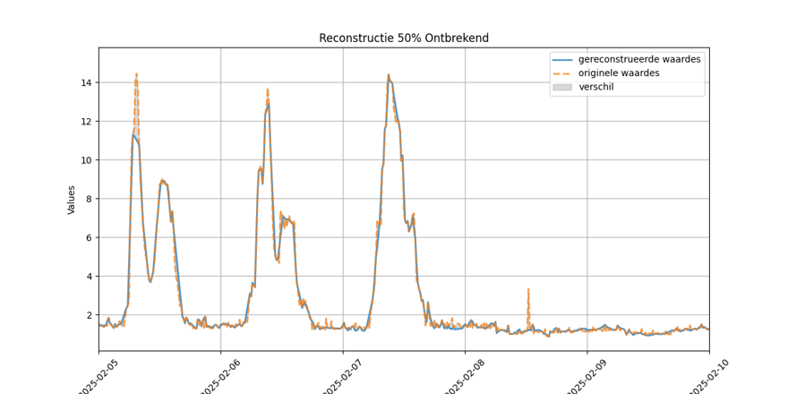

During this project we got the assignment to create an improved energy monitoring dashboard for Kenter, a company that provides energy solutions to businesses. On the one hand the dashboard should be an intuitive way for the employees to analyze historical data to be able to give better advice to their customers. On the other hand, there should also be a data reconstruction solution. Sometimes energy datapoints are missing from the incoming data, these need to be reconstructed to ensure accurate billing. This was, for a large part, being done by hand. We were asked to make a n automated solution.
The project started with analyzing the current situation. This involved interviewing the customer (Kenter), analyzing their current dashboard and data reconstruction process and its shortcomings, and researching what other solutions are being used in the industry. After this we started brainstorming about how we could improve the current situation, and came up with a plan to create a new dashboard that would be more intuitive and user-friendly, as well as a data reconstruction solution that would be more efficient and accurate. We then started implementing our plan, making sure to keep the customer updated and involved in the process. We ended up writing a dashboard with a .NET backend and an Angular frontend. For the data reconstruction we ended up going with a solution primarily based on interpolation, but more about that in the next paragraph, as this was my responsibility. In the following video our solution is introduced: https://www.youtube.com/watch?v=nV4SZDc6k-E.
This project was performed as a group of five students, three of whom where specialized in application development (Wesley van Laer, Nathan Ramaker, and Lucas Vanden Heede), one in cybersecurity (Jarne Willems), and one (me) in data science and AI. Therefore, I was given the responsibility of the data reconstruction solution. The customer initially suggested we went with an AI solution, so that is the direction in which I started thinking first, also because this could possibly allow for predictions of future energy consumption and generation. However, after analyzing the data I realized that predictions were out of the questions due to the lack of data and, more importantly, the lack of available variables. I also realized that the data was much to simplistic to justify the resource intensity of AI, which is why I ended up going with an interpolation model. As the data followed clear seasonal trend, throughout both the day, the week, and the year interpolation was able to give decent reconstruction. An example of this can be seen in the figure below, where the dotted orange line is the original data. The solid blue line is this same data, but with half of it removed and then reconstructed via the dashboard.
I did also look into an AI model. This because interpolation would not be able to reconstruct large data gaps. I used Facebook's Prophet, because it works well with seasonal data and should not require much customization from customer to customer, which is ideal as freeing up manpower was the main goal. I however early on realized that the AI route would not lead to a useable solution in the scope of this project, due to the lack of variety in the data, so I decided to not spend a lot of time on it.
From this project I learned a lot about the importance of understanding the data and the problem at hand before jumping into a solution. I also learned a lot about the importance of communication with the customer and how to keep them involved in the process. Finally, I learned a lot about the importance of being flexible and open to change, as sometimes the initial plan does not work out and you need to adapt.